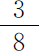

个体的变异性；显著性质的变异
上面所考察的那些差异是不同品种的特征；但是还有只限于个体所具有的差异，或者往往为某些品种所具有但并不构成它们的特征的差异。这些个体差异是重要的，因为在大多数场合中它们可以借着人的选择力量而被保存下来和积累起来；这样，一个现存的品种就会大大地被改变，或者形成一个新品种。饲育者只注意和选择那些在外表上看得见的轻微差异；但是整个体制由于生长的相关作用是如此紧密地联系在一起，以致某一部分的变化屡屡会引起其他部分的变化。所有种类的改变对我们的目的来说，都是同等重要的，在普通不易变化的部分中所发生的改变，比在某种显著部分中所发生的改变更具有重要性。一个十分稳定品种的任何看得见的性状上的偏差在今天都被当做一种缺点而被排斥掉；但是在特征显著的品种被形成以前的古老时代，这等偏差决不会受到排斥；相反地，它们大概会作为一种珍奇的东西而被热心地保存下来。并且像我们以后要更加清楚看到的那样，这等偏差由于无意识选择的过程而被慢慢地扩大了。
我曾对若干品种的身体的各种不同部分进行过多次测计，但我几乎从来没有看见过同一品种的个体是完全一样的——这等差异比我们普通在同一地区的野生种中所遇到的差异还要大。先从翅膀的初级飞羽和尾谈起；但我首先必须提到，因为有些读者可能还不晓得这一点，在野生鸟类中初级飞羽和尾羽的数目一般是固定的，这不仅构成了全属的特征，甚至还构成了全科的特征。如果尾羽的数目非常多，例如天鹅（swan）的尾羽，那么尾羽在数目上就容易变异；但这一点并不能应用于鸠鸽科的若干物种和属，因为它们的尾羽决不会少于12支或者多于16支（根据我所听到的）；这种尾羽的数目，除了少数例外，构成了全亚科的特征[1]。野生岩鸽有12支尾羽。扇尾鸽的尾羽，如我们已经看见过的，是从14支到42支。我曾数过同巢的两只幼鸽的尾羽，一是22支，一是27支。突胸鸽很容易发生多余的尾羽，有几次我曾看到我养的突胸鸽的尾羽为14支或15支。布尔特（Bult）先生有一个标本，经过雅列尔先生的检查，其尾羽为17支。我有一只尼鸽，其尾羽为13支，另一只尼鸽的尾羽则为14支；我数过一只盔鸽的尾羽，为15支，这个品种同尼鸽仅稍有区别，并且我还听到过其他相同的事例。另一方面，勃连特先生有一只龙鸽，它的尾羽在其一生中从来没有多于10支；我有一只龙鸽，是勃连特先生养的龙鸽的后代，它的尾羽只有11支。我曾看到一只秃头翻飞鸽，它的尾羽只有10支；勃连特先生有一只空中翻飞鸽，其尾羽也是10支，但另一只空中翻飞鸽的尾羽则为14支。在勃连特先生繁育的空中翻飞鸽中，有两只是值得注意的——一只空中翻飞鸽的两支中央尾羽在方向上稍有分歧，另一只空中翻飞鸽的两支外侧尾羽比其余的长

英寸；所以在这两个场合中，它们的尾都表现了一种分叉的倾向，不过表现的方式有所不同。这种情形向我们阐明了，像贝西斯坦所描述的燕尾品种是怎样经过细心的选择而被形成的。关于初级飞羽，根据我所知道的，在鸠鸽科中其数目永远是9支或10支。在岩鸽中其数目为10支；但我曾经看到不下八只短面翻飞鸽的初级飞羽只有9支。并且这种数目的出现受到了养鸽者们的注意，因为白色的10支初级飞羽是短面秃头翻飞鸽的特点之一。然而勃连特先生有一只空中翻飞鸽（不是短面的），它在两翅上生有11支初级飞羽。苛克先生，一位获奖信鸽的卓越育种者，肯定地向我说，在他养的鸽子中有一些在两翅上生有11支初级飞羽。我曾看见过两只突胸鸽在一翅上生有11支初级飞羽。有三位养鸽者肯定地向我说，他们曾看到斯堪得龙鸽有12支初级飞羽，但是，纽美斯特肯定地说过，近似的“佛罗伦斯侏儒鸽”的中央飞羽常常是双重的，所以这12的数目可能是由于10支初级飞羽中有2支各具两个羽轴而造成的。次级飞羽（secondary wing-feathers）很难数清，不过它的数目似乎变动于12～15支之间。翅长和尾长对体部的比例，以及翅长对尾长的比例，肯定是有变异的；我特别在毛领鸽中注意过这一点。从布尔特先生所搜集的非常多的突胸鸽看来，翅和尾在长度上的变异是巨大的；有时它们会长到难以直立活动的地步。关于少数初级飞羽的比例长度，我只观察到轻微程度的变异性。勃连特先生告诉我说，他曾观察过初级飞羽在形状上有很轻微的变异。但后边所说的这些方面的变异如果同在鸠鸽科的自然物种中所观察到的那些差异比较起来，还是极其轻微的。
我曾看到同一品种的个体在喙的方面有很显著的差异，例如在细心繁育的毛领鸽和喇叭鸽中就是如此。信鸽的喙在细小和钩曲的程度上常常有显著的差异。在许多品种中也确有这样情形：例如我有黑色排孛鸽的两个品种，它们在上颌的钩曲方面显然有所不同。在嘴的宽阔度方面，我发现两只燕鸽有巨大的差异。在具有第一流优点的扇尾鸽中，我曾看到某些个体的颈远比其他个体的长而细。还可以举出其他类似的事实。我们已经说过所有扇尾鸽（爪哇产的亚族除外）的油腺都退化了，我还可以补充地说，这种退化的倾向具有如此强烈的遗传性，以致我用扇尾鸽同突胸鸽所育成的某些杂种也不具油腺，虽然并非全部都是这样；在许多燕鸽中我查得有一只，在尼鸽中有两只，不具油腺。
在同一品种中，趾上的鳞甲常常发生变异，有时甚至同一个体的两只脚上的鳞甲也有差异；谢特兰岩鸽的中趾有15片鳞甲，后趾有六片鳞甲；然而我曾看见过一只侏儒鸽，它的中趾有16片鳞甲，后趾有8片鳞甲；一只短面翻飞鸽在同样的两个趾上只有12片和5片鳞甲。岩鸽在趾间没有可以看得见的皮；但是我有一只斑点鸽和一只尼鸽在两个内趾（inner toes）之间有皮，其幅为四分之一英寸。另一方面，脚上生有羽毛的鸽子，其外趾基部由皮连在一起是很一般的，以后还要对此进行更充分的阐明。我有一只红色翻飞鸽，它的咕咕之声不像它的同伴，而同笑鸽的音调接近；这种鸽子有一种习性，常常把翅膀举起成一弧形而优雅地漫步，我从来没有看见过任何其他鸽子可以比得上这种程度的。几乎在每一个品种中，体部大小、颜色、脚上的羽毛以及头上的倒生羽毛都有巨大的变异性，关于这些情形我不必再多说了。但是我可以提一提在“水晶宫”展览过的一只值得注意的翻飞鸽[2]，它的头上生有不规则的羽冠，好像波兰鸡（Polish fowl）头上的羽簇似的。布尔特先生育成过一只雌毛领鸽，它的大腿上的羽毛长得可以接触地面，而且他还育成过一只具有同样特点的雄毛领鸽，不过其程度较轻：他从这两只鸽子繁育出一些具有同样性状的其他鸽子，这些鸽子曾在“菲罗养鸽协会”展览过。我育成过一只杂种鸽子，它生有丝一般的羽毛，而且翅膀和尾羽是如此之短和不完善，甚至不能飞到一英尺高。
在鸽子的羽毛方面有许多奇特的和可以遗传的特点：例如，扁桃翻飞鸽直到脱换羽毛三次或四次之后，才能获得完全的斑点羽毛：鸢形翻飞鸽（kite tumbler）最初只有黑色和红色的虎斑纹，但是“当它脱换了初生羽毛之后，就几乎变成黑色的了，一般生有一条浅蓝色的尾，并且初级飞羽的内羽片（inner webs）一般是微带红色的”[3]。纽美斯特描述过一个黑色品种，它的翅膀有白条纹，它的胸部有一个白色新月状的斑；这些斑在第一次脱换羽毛时一般是暗红色的，但是在第三次或第四次脱换羽毛之后，它们便发生了变化，同时翼羽和头部的冠羽也变成白色或灰色的了[4]。
有一个重要的事实，即各个品种的被人看做有价值的那些特别性状都是显著容易变异的，而且我相信对于这一规律几乎没有例外：例如，在扇尾鸽中，尾羽的数目和方向、体姿以及战栗的程度都是高度容易变异的；在突胸鸽中，胸的膨胀程度以及嗉囊膨胀时的形状；在信鸽中，喙的长度、狭窄和钩曲，以及肉垂的多少；在短面翻飞鸽中，喙的短、额的突出以及一般的步态[5]，在扁桃翻飞鸽中，羽衣的颜色；在普通翻飞鸽中，翻转的样子；在排孛鸽中，喙的宽和短，以及眼睛周围的肉垂的多少；在侏儒鸽中，体部的大小；在浮羽鸽中，颈毛的浮凸，最后，在喇叭鸽中，咕咕的鸣声以及鼻孔上面的羽簇的大小。这些都是若干品种的所赖以区别的和被选择的性状，它们都是显著容易变异的。
关于若干品种的性状，还有一个有趣的事实，即这些性状常常在雄鸽中表现得最为强烈。如果把雄信鸽和雌信鸽分别在不同的围栏中展出，那么可以明显地看出雄信鸽的肉垂远比雌信鸽的肉垂发达，虽然我曾看见过海恩斯（Haynes）先生养的一只雌信鸽具有很多的肉垂。推葛梅尔先生告诉我说，在琼斯（P．H．Jones）先生所拥有的20只排孛鸽中，雄者的眼睛周围的肉垂一般最多；埃斯奎兰特先生也相信这一规律，但第一流判断者威尔却对这个问题抱有一些怀疑。雄突胸鸽可以把它们的嗉囊膨胀得远比雌突胸鸽所能做到的为大；然而我曾看到伊文斯先生所拥有的一只雌突胸鸽能够使胸突起得非常好；不过这是一种异常的情形。获奖扇尾鸽的成功育种者威尔先生告诉我说，他的雄鸽的尾羽数目常比雌鸽的为多。伊顿先生说[6]，如果雄翻飞鸽和雌翻飞鸽具有同等的优点，那么雌翻飞鸽的价钱就要高一倍；因为鸽子总是一夫一妇，所以为了繁殖，同等数目的雄者和雌者是必要的，这似乎阐明了具有高贵优点的雌者比具有高贵优点的雄者为少。浮羽鸽的颈羽、毛领鸽头巾状羽毛的、喇叭鸽羽簇的、翻飞鸽翻转的发达程度，在雌雄之间并没有差异。这里我可以补充一个颇为不同的例子：在法国[7]有一个葡萄酒色的突胸鸽变种，它的雄者一般生有黑斑，而雌者从来不生黑斑。贾波犹斯[8]说，在某些淡色的鸽子中，雄者的羽毛具有黑色的条纹，这种条纹每当脱换羽毛一次就扩大一次，所以雄者最后便带有黑色斑点了。信鸽的喙上的肉垂和眼睛周围的肉垂，以及排孛鸽的眼睛周围的肉垂，都是与年俱增的。性状随着年龄的增长而扩大，特别是雌雄之间在上述几点上的差异，都是值得注意的事实，因为在原始的岩鸽中，雌雄之间在任何年龄都没有可以看得见的差异；并且在整个鸠鸽科[9]中雌雄之间也常常没有任何强烈显著的差异。
[1] 《鸽目管窥》，波那帕特著。《报告书》，1854—1855年。勃里斯先生（《博物学年报》，第十九卷，1847年，第41页）提到过一个很奇特的事实：“Ectopistes有两个物种彼此密切近似，其中一个物种的尾羽为十四支，而另一个物种——北美旅鸽（Passenger pigeon）的尾羽只有正常的数目，即十二支。”
[2] 《家禽记录》，第三卷，1855年，第82页中有过记载和绘图。
[3] 《鸽之书》（The Pigeon Book），勃连特著，1859年，第41页。
[4] Die staarhälsige Taube．Das Ganze ＆c．，第21页，第1表，第4图。
[5] 《论扁桃翻飞鸽》（A Treatise on Almond-Tumbler），伊顿著，1852年，第8页等。
[6] 《论扁桃翻飞鸽》（A Treatise on Almond-Tumbler），伊顿著，1852年，第10页。
[7] 包依塔和考尔比：《鸽》，1824年，第173页。
[8] 《比利时的信鸽》（Le Pigeon Voyageur Be|ge），1865年，第87页。我曾在《人类的由来》（第六版，第466页）一书中根据推葛梅尔先生的权威著作举出过一些奇妙的例子：银色（即很淡的青色）鸽子一般是雌的，具有这样特征的族很容易产生出来。旁尼兹说，在雌雄两性中某种颜色的斑点常常是不同的，并且某种颜色在雌鸽中比在雄鸽中更为普遍（参阅《家鸽的变种》，1873年）。
[9] 牛顿（A．Newton）教授说（《动物学会会报》，1865年，第716页），关于表现有任何显著的性差异的物种，他一个也不知道；但是华莱士（Wallace）先生告诉我说，在赤胸绿鸠（Treronidæ）的亚科中，雌雄两性在颜色上是相当不同的。关于鸠鸽中的性差异，再参阅高尔得（Gould）的《澳洲鸟类手册》（Handbook to the Birds of Australia），第二卷，第109—149页。